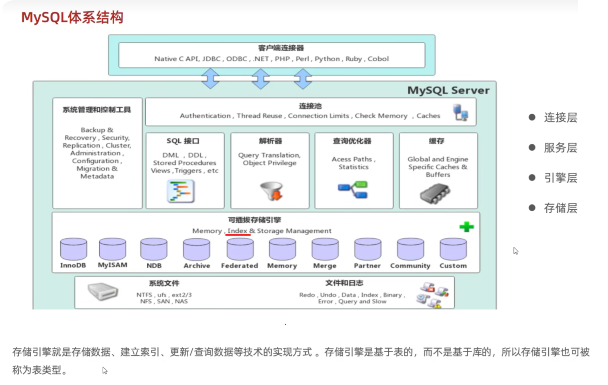
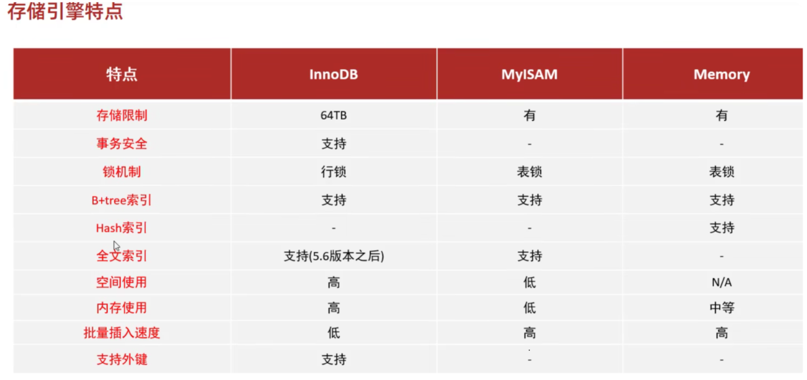
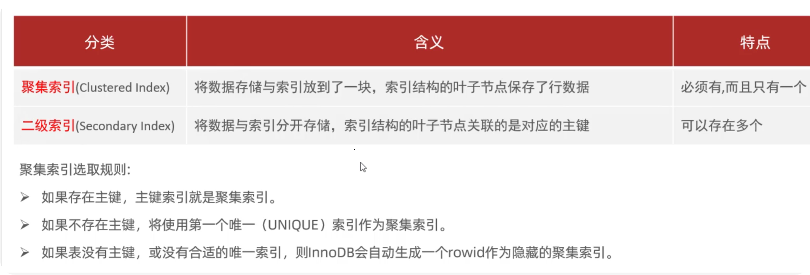
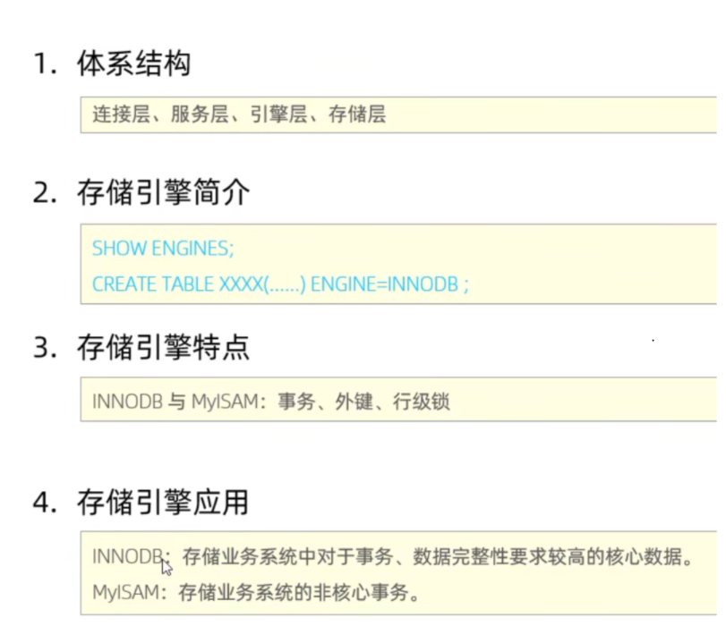
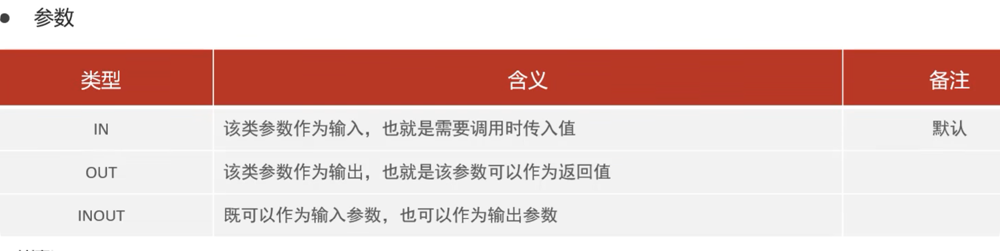
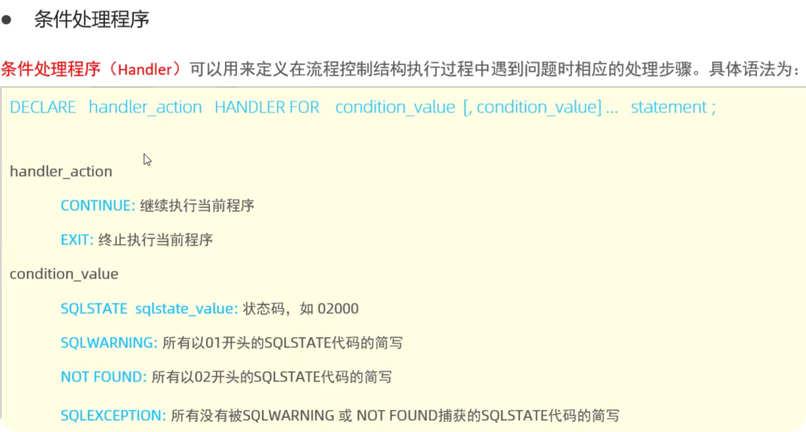

MySQL
MySQL
一种关系型数据库，以表的结构存储数据
MySQL体系结构
SQL语句
-
DDL-数据定义语言
1
2
3
4
5show databases; 查询所有数据库
select database(); 查询当前数据库
create database [if not exists] 数据库名 [default charset 字符集] [collate 排序规则];创建
drop database[if exists] 数据库名; 删除
use 数据库名; 使用1
2
3
4
5
6
7
8
9
10
11
12
13-- 创建数据库
CREATE DATABASE my_database;
-- 使用数据库
USE my_database;
-- 创建数据表
CREATE TABLE users (
id INT AUTO_INCREMENT PRIMARY KEY,
username VARCHAR(50) NOT NULL,
password VARCHAR(50) NOT NULL,
created_at TIMESTAMP DEFAULT CURRENT_TIMESTAMP
); -
DML-数据操作语言
1
2
3
4
5
6
7
8
9
10
11
12
13
14
15
16
17
18
19
20
21
22
23
24
25
26
27-- 普通用法
INSERT INTO `student`(`name`) VALUES ('zsr');
-- 插入多条数据，字符串和日期型数据包含在引号中
INSERT INTO `student`(`name`,`pwd`,`sex`) VALUES ('zsr','200024','男'),('gcc','000421','女');
-- 省略字段 插入的字段要和数据库中的一一对应
INSERT INTO `student` VALUES (5,'Bareth','123456','男','2000-02-04','武汉','1412@qq.com',1);
-- 修改学员名字,指定条件
UPDATE `student` SET `name`='zsr204' WHERE id=1;
-- 不指定条件的情况,会改动所有表
UPDATE `student` SET `name`='zsr204';
-- 修改多个属性
UPDATE `student` SET `name`='zsr',`address`='湖北' WHERE id=1;
-- 通过多个条件定位数据
UPDATE `student` SET `name`='zsr204' WHERE `name`='zsr' AND `pwd`='200024';
-- 删除数据(避免这样写,会全部删除)
DELETE FROM `student`;
-- 删除指定数据
DELETE FROM `student` WHERE id=1; -
DQL-数据查询语言
1
2
3
4
5
6
7
8
9
10SELECT [ALL | DISTINCT]
{* | table.* | [table.field1[as alias1][,table.field2[as alias2]][,...]]}
FROM table_name [as table_alias]
[left | right | inner join table_name2] -- 联合查询
[WHERE ...] -- 指定结果需满足的条件
[GROUP BY ...] -- 指定结果按照哪几个字段来分组
[HAVING] -- 过滤分组的记录必须满足的次要条件
[ORDER BY ...] -- 指定查询记录按一个或多个条件排序
[LIMIT {[offset,]row_count | row_countOFFSET offset}]; -- 指定查询的记录从哪条至哪条
-
DCL-数据控制语言
1
2
3
4
5
6
7
8
9
10
11
12
13-- 创建用户
CREATE USER 'newuser'@'localhost' IDENTIFIED BY 'password';
-- 授予权限
GRANT privileges ON database.table TO 'username'@'host';
SELECT:查询数据的权限。
INSERT:插入数据的权限。
UPDATE :更新数据的权限。
DELETE:删除数据的权限。
ALL PRIVILEGES:授予所有权限。
-- 查看用户权限
SHOW GRANTS FOR 'alice'@'localhost';
-- 撤销权限
REVOKE privileges ON database.table FROM 'username'@'host';
查询
-
基础查询 DISTINCT去除重复数据
1
2
3
4
5
6
7
8
9
10
11
12
13
14
15
16
17
18
19
20
21
22
23
24-- 查询全部学生
SELECT * FROM student;
-- 查询指定的字段
SELECT `LoginPwd`,`StudentName` FROM student;
-- 别名 AS(可以给字段起别名,也可以给表起别名)
SELECT `StudentNo` AS 学号,`StudentName` AS 学生姓名 FROM student AS 学生表;
-- 函数 CONCAT(str1,str2,...)
SELECT CONCAT('姓名',`StudentName`) AS 新名字 FROM student;
-- 查询系统版本(函数)
SELECT VERSION();
-- 用来计算(计算表达式)
SELECT 100*53-90 AS 计算结果;
-- 查询自增步长(变量)
SELECT @@auto_increment_increment;
-- 查询有哪写同学参加了考试,重复数据要去重
SELECT DISTINCT `StudentNo` FROM result; -
条件查询 <> != 都是不等于的意思
1
select 查询列表 from 表名 where 筛选条件;
-
模糊查询
1
2
3
4
5
6-- 查询名字含d的同学
SELECT `StudentNo`,`StudentName` FROM student
WHERE `StudentName` LIKE '%d%';
-- 查询名字倒数第二个为d的同学
SELECT `StudentNo`,`StudentName` FROM student
WHERE `StudentName` LIKE '%d_'; -
分组查询
1
2
3
4
5
6
7
8
9
10
11
12
13
14
15
16select 分组函数，分组后的字段
from 表
【where 筛选条件】
group by 分组的字段
【having 分组后的筛选】
【order by 排序列表】
-- 查询不同科目的平均分、最高分、最低分且平均分大于90
-- 核心：根据不同的课程进行分组
SELECT SubjectName,AVG(StudentResult),MAX(`StudentResult`),MIN(`StudentResult`)
FROM result r
INNER JOIN `subject` s
on r.SubjectNo=s.SubjectNo
GROUP BY r.SubjectNo
HAVING AVG(StudentResult)>90; -
连接查询
1
2
3
4
5
6
7
8
9
10
11
12
13
14
15-- 隐式内连接 内连接查的是两个表的交集
SELECT 字段列表 FROM 表1,.2 WHERE 条件...;
-- 显式内连接
SELECT字段列表 FROM 表1[INNER]JOIN 表2 ON 连接条件...;
-- 外连接
-- 左外连接
SELECT 字段列表 FROM 表1 LEFT[OUTER]JOIN 表2 ON 条件
-- 相当于查询表1(左表)的所有数据 包含 表1和表2交集部分的数据
-- 右外连接
SELECT 字段列表 FROM 表1 RIGHT[OUTER]JOIN 表2 ON 条件
-- 相当于查询表2(右表)的所有数据 包含 表1和表2交集部分的数据
-- 自连接查询语法
SELECT字段列表 FROM 表A 别名AJOIN 表A 别名B ON 条件...; -
联合查询
1
2
3
4
5
6-- 对于union查询，就是把多次查询的结果合并起来，形成一个新的查询结果集
SELECT 字段列表 FROM 表A …
UNION [ ALL ]
SELECT 字段列表 FROM 表B …;
-- 对于联合查询的多张表的列数必须保持一致，字段类型也需要保持一致。
union all 会将全部的数据直接合并在一起，union 会对合并之后的数据去重 -
子查询
1
2
3
4
5
6
7
8
9
10
11
12
13
14
15
16
17
18
19
20
21-- SQL语句中嵌套SELECT语句，称为嵌套查询，又称子查询
SELECT *FROM t1 WHERE column1=(SELECT column1 FROM t2 );
-- 子查询外部的语句可以是INSERT/UPDATE/DELETE/SELECT的任何一个
-- 根据子查询位置，分为:WHERE之后、FROM之后、SELECT之后。
-- 查询‘课程设计’的所有考试结果（学号，科目编号，成绩）降序排列
-- 方式一:使用连接查询
SELECT `StudentNo`,r.`SubjectNo`,`StudentResult`
FROM result r
INNER JOIN `subject` s
on r.StudentNo=s.SubjectNo
WHERE SubjectName='课程设计'
ORDER BY StudentResult DESC;
-- 方式二:使用子查询（由里到外）
SELECT StudentNo,SubjectNo,StudentResult
from result
WHERE SubjectNo=(
SELECT SubjectNo FROM `subject`
WHERE SubjectName='课程设计'
) -
排序和分页
1
2
3
4
5select 查询列表
from 表
where 筛选条件
order by 排序列表 asc/desc
-- asc 升序 desc降序 order by的位置一般放在查询语句的最后（除limit语句之外）
常用函数
1 | -- 数学运算 |
聚合函数
1 | SELECT COUNT(StudentName) FROM student; |
事务
- 原子性（Atomicity） 原子性是指事务是一个不可分割的工作单位，事务中的操作要么都发生，要么都不发生。
- 一致性（Consistency） 事务前后数据的完整性必须保持一致。
- 隔离性（Isolation） 事务的隔离性是多个用户并发访问数据库时，数据库为每一个用户开启的事务，不能被其他事务的操作数据所干扰，多个并发事务之间要相互隔离。
- 持久性（Durability） 事务一旦被提交则不可逆，被持久化到数据库中，接下来即使数据库发生故障也不应该对其有任何影响
- 默认MySQL的事务是自动提交的，执行一条DML语句，MySQL会隐式的提交事务
导致的问题
| 脏读 | 指一个事务读取了另外一个事务未提交的数据。 |
|---|---|
| 不可重复读 | 在一个事务内读取表中的某一行数据，多次读取结果不同。 |
| 虚读(幻读) | 是指在一个事务内读取到了别的事务插入的数据，导致前后读取不一致。 |
| 事务隔离级别 | 脏读 | 不可重复读 | 幻读 |
|---|---|---|---|
| 读未提交（read-uncommitted） | 是 | 是 | 是 |
| 读已提交（read-committed） | 否 | 是 | 是 |
| 可重复读（repeatable-read） | 否 | 否 | 是 |
| 串行化（serializable） | 否 | 否 | 否 |
可重复读是MySQL默认的隔离级别
操作代码
1 | -- 关闭自动提交 |
索引
- 什么是索引： 是帮助MySQL高效获取数据的数据结构。
- 索引设计原则
- 选择性原则：索引列应该具有高选择性，即列中不同值的数量与表中总行数的比例高。这样可以减少索引中的重复值，提高查询效率。
- 最左前缀匹配原则：对于组合索引，MySQL会从左到右使用索引中的列。因此，将选择性最高的列放在最左边，可以最大化索引的使用效率。
- 索引列的顺序：在组合索引中，列的顺序应该基于查询条件中列的出现顺序和选择性。
- 避免冗余索引：如果一个索引包含了另一个索引的所有列，那么后者就是冗余的，应该删除。
- 考虑查询模式：根据应用的查询模式设计索引。如果某些查询非常频繁，应该为这些查询创建索引。
- 索引维护成本：索引虽然可以提高查询效率，但会增加插入、删除和更新操作的开销。因此，需要权衡索引带来的性能提升和维护成本。
- 使用合适的索引类型：根据数据的特性和查询需求选择合适的索引类型。
- 监控和优化：定期监控索引的使用情况，移除不常用的索引，优化常用的索引。
- 考虑列的数据类型：某些数据类型（如VARCHAR）在创建索引时需要指定前缀长度，这会影响索引的效率。
- 避免全表扫描：尽可能设计索引以避免全表扫描，特别是在大数据量的表中。
- 使用索引的好处
- 提高查询速度
- 确保数据的唯一性
- 可以加速表和表之间的连接 , 实现表与表之间的参照完整性
- 使用分组和排序子句进行数据检索时 , 可以显著减少分组和排序的时间
- 全文检索字段进行搜索优化
使用索引的优缺点
- 优点
- 提高数据检索的效率，降低数据库的IO成本
- 通过索引列对数据进行排序，降低数据排序的成本，降低CPU的消耗
- 缺点
- 占据空间
- 提高了查询的效率，但降低了更新表的速度
- 支持索引的引擎
- Memory引擎支持hash索引
- InnoDB使用B+tree索引结构，具有自适应hash功能，hash索引根据B+Tree索引在指定条件下自动构建
- 为什么InnoDB使用B+tree
- 相对于二叉树，层级更少，搜索效率更高
- 对于B-tree，无论是叶子节点还是非叶子节点，都会保存数据，这样导致
页中存储的键值减少，指针跟着减少，要同样保存大量数据，只能增加树的
高度，导致性能降低; - 相对Hash索引，B+tree支持范围匹配及排序操作
索引分类
-
主键索引
1
2
3
4
5
6
7
8
9
10
11
12唯一的标识，主键不可重复，只有一个列作为主键
最常见的索引类型，不允许为空值
确保数据记录的唯一性
确定特定数据记录在数据库中的位置
-- 创建表的时候指定主键索引
CREATE TABLE tableName(
......
PRIMARY INDEX (columeName)
)
-- 修改表结构添加主键索引
ALTER TABLE tableName ADD PRIMARY INDEX (columnName) -
普通索引
1
2
3
4
5
6
7
8
9
10
11
12
13
14index 和 key 关键字都可以设置常规索引
应加在查询找条件的字段
不宜添加太多常规索引,影响数据的插入,删除和修改操作
-- 直接创建普通索引
CREATE INDEX indexName ON tableName (columnName)
-- 创建表的时候指定普通索引
CREATE TABLE tableName(
......
INDEX [indexName] (columeName)
)
-- 修改表结构添加普通索引
ALTER TABLE tableName ADD INDEX indexName(columnName) -
唯一索引
1
2
3
4
5
6
7
8
9
10
11
12
13它与前面的普通索引类似，不同的就是：索引列的值必须唯一，但允许有空值
与主键索引的区别：主键索引只能有一个、唯一索引可以有多个
-- 直接创建唯一索引
CREATE UNIQUE INDEX indexName ON tableName(columnName)
-- 创建表的时候指定唯一索引
CREATE TABLE tableName(
......
UNIQUE INDEX [indexName] (columeName)
);
-- 修改表结构添加唯一索引
ALTER TABLE tableName ADD UNIQUE INDEX [indexName] (columnName) -
全文索引
1
2
3
4
5
6
7
8
9
10快速定位特定数据（百度搜索就是全文索引）
在特定的数据库引擎下才有：MyISAM
只能用于CHAR , VARCHAR , TEXT数据列类型
适合大型数据集
-- 增加一个全文索引
ALTER TABLE `student` ADD FULLTEXT INDEX `StudentName`(`StudentName`);
-- EXPLAIN 分析sql执行的情况
EXPLAIN SELECT * FROM student; -- 非全文索引
EXPLAIN SELECT * FROM student WHERE MATCH(StudentName) AGAINST('d'); -- 全文索引
索引的使用
-
使用原则
- 索引不是越多越好，小数据量的表不需要加索引
- 不要对经常变动的数据增加索引
- 索引一般加在经常要查询的列上
-
索引的创建
1
2
3
4
5CREATE TABLE 表名 (
字段名1 数据类型 [完整性约束条件…],
字段名2 数据类型 [完整性约束条件…],
[UNIQUE|FULLTEXT|SPATIAL] INDEX|KEY [索引名] (字段名[(长度)] [ASC |DESC])
); -
查看索引
1
SHOW INDEX FROM table name ;
-
创建后添加索引
1
2
3
4
5
6
7-- 方法一：CREATE在已存在的表上创建索引
CREATE [UNIQUE|FULLTEXT|SPATIAL] INDEX 索引名
ON 表名 (字段名[(长度)] [ASC |DESC]) ;
-- 方法二：ALTER TABLE在已存在的表上创建索引
ALTER TABLE 表名 ADD [UNIQUE|FULLTEXT|SPATIAL]
INDEX 索引名 (字段名[(长度)] [ASC |DESC]) ; -
索引的删除
1
2
3
4-- 删除索引
DROP INDEX 索引名 ON 表名;
-- 删除主键索引
ALTER TABLE 表名 DROP PRIMARY KEY;
存储引擎
-
早期MySQL使用MyISAM引擎，5.5后InnoDB是MySQL默认的存储引擎
-
InnoDB特点
- DML操作遵循ACID模型，支持事务
- 行级锁，提高并发访问性能
- 支持外键FOREIGN KEY 约束，保证数据的完整性和正确性
-
MyISAM
- 不支持事务，不支持外键
- 支持表锁，不支持行锁
- 访问速度快
-
Memory
- 内存存放
- hash索引
-
InnoDB根据索引的存储形式，分为以下两种
 -
其他

视图
- 是一种虚拟存在的表，视图中的数据并不在数据库中实际存在，行和列的数据来自定义视图的查询中使用的表，并且实在使用视图时动态产生的
- 视图只保存查询的SQL逻辑，不保存查询结果
- 可以一个视图创建另一个视图
- 好处
- 简单：简化用户对数据的理解，简化他们的操作
- 安全：用户只能查询和修改他们所能见到的数据
- 数据独立：帮助用户屏蔽真实表结构带来的影响
视图操作
-
创建视图
1
CREATE [OR REPLACE]VIEW 视图名称((列名列表)】AS SELECT语句[WITH[CASCADED|LOCAL] CHECK OPTION]
-
查询视图
1
2查看创建视图语句:SHOW CREATE VIEW 视图名称
查看视图数据:SELECT*FROM 视图名称 -
修改
1
2方式一:CREATE [OR REPLACE]VIEW 视图名称(列名列表)】AS SELECT语句[WITH[CASCADED|LOCAL]CHECK OPTION]
方式二:ALTER VIEW 视图名称((列名列表)AS SELECT语句[WITH[CASCADED|LOCAL]CHECK OPTION] -
删除
1
DROP VIEW [IF EXISTS] 视图名称 [,视图名称]...
视图的更新
 ## 存储过程
## 存储过程
概述和特点
- 事先经过编译并存储在数据库中的一段SQL语句的集合
- 数据库SQL语言层面的代码封装和复用
- 简化开发人员的工作
- 减少数据在数据库和应用程序之间的传输
- 特点
- 封装，复用
- 可以接受参数，也可以返回数据
- 减少网络交互，效率提升
使用
-
创建
1
2
3
4CREATE PROCEDURE 存储过程名称([.参数列表 ])
BEGIN
-- SOL语句
END -
调用
1
call 名称([参数]);
-
查看
1
2SELECT* FROM INFORMATION_SCHEMA.ROUTINES WHERE ROUTINE_SCHEMA='xx';--查询指定数据库的存储过程及状态信息
SHOW CREATE PROCEDURE 存储过程名称;--查询某个存储过程的定义 -
删除
1
drop procedure [if exists] 存储过程的名称；
-
命令行
1
2
3在命令行中，执行创建存储过程的SQL时,
需要通过关键字 delimiter 指定SQL语句的结束符。
用$$结束
变量
-
系统变量是MySQL服务器提供的，不是用户定义的，属于服务器层面，分为全局变量(GLOBAL)、会话变量(SESSION)
-
查看系统变量
1
2
3SHOW [SESSION|GLOBAL] VARIABLES；-- 查看所有系统变量
SHOW [SESSION |GLOBAL] VARIABLES LIKE '.......';-- 可以通过LKE模糊匹配方式查找变量
SELECT @@[SESSION|GLOBAL] 系统变量名;-- 查看指定变量的值 -
设置系统变量
1
2SET [SESSION|GLOBAL]系统变量名=值
SET @@[SESSION|GLOBAL]系统变量名=值, -
如果没有指定SESSION/GLOBAL，默认是SESSION会话变量，mysql服务重新启动之后，所设置的全局参数会失效，要想不失效，可以在 /etc/mny.cnf 中配置
-
用户定义变量
-
作用域为当前连接
-
赋值
1
2
3
4SET @var name =expr [, @var_name = expr] ... ;
SET @var name :=expr [, @var name := expr]...
SELECT @var name := expr [, @var name := expr]...
SELECT 字段名 INTO @var_name FROM 表名 -
使用
1
select @var_name;
-
用户定义变量无需声明或初始化，没有初始化取到的值为NULL
-
-
局部变量
-
作用域为begin…end块
-
访问之前需要用DECLARE声明
-
参数
 -
用法
1
2
3
4CREATE PROCEDURE 存储过程名称([IN/OUT/INQUT 参数名 参数类型 ])
BEGIN
-- SQL语句
END ;
-
游标
-
用来存储查询的结果集的数据类型
-
存储过程和函数中可以使用游标对结果集进行循环的处理
-
具体使用
-
声明游标
1
DECLARE 游标名称 CURSOR FOR 查询语句
-
打开游标
1
open 游标名称;
-
获取游标记录
1
fetch 游标名称 info 变量[,变量];
-
关闭游标
1
close 游标名称;
-
存储函数
-
有返回值的存储过程，存储函数的参数类型只能是IN类型的
1
2
3
4
5
6
7
8
9
10CREATE FUNCTION 存储函数名称([参数列表])
RETURNS type [characteristic ...
BEGIN
-- SQL语句
RETURN ....
END ;
characteristic说明:
DETERMINISTIC:相同的输入参数总是产生相同的结果
NO SOL:不包含 SQL语句。
READS SOL DATA:包含读取数据的语句，但不包含写入数据的语句
触发器
定义
数据库对象在执行insert/update/delete之前或之后，触发并执行触发器中定义的SQL语句的集合
保证数据的完整性、日志记录、数据校验
类型

语法
-
创建
1
2
3
4
5
6CREATE TRIGGER trigger name
BEFORE/AFTER INSERT/UPDATE/DELETE
ON tbl name FOR EACH ROW --行级触发器
BEGIN
trigger stmt ;
END; -
查看
1
show triggers;
-
删除
1
drop triggers [schema_name.] trigger_name; -- 没有指定schema_name就是当前数据库
锁
锁是计算机协调多个进程或线程并发访问某一资源的机制，锁冲突是影响数据库并发访问性能的一个重要因素
分类
-
全局锁:锁定数据库中的所有表。
- 加锁后整个实例就处于只读状态，后续的DML,DDL,已经更新的操作事务语句都会被阻塞
- 做全库的逻辑备份，获取一致的视图性，保证数据的完整性
- 特点
- 在主库上备份，备份期间都不能执行更新，业务停摆
- 在从库上备份，备份期间从库不能执行主库同步过来的二进制日志，主从延迟
-
表级锁:每次操作锁住整张表。
-
发生锁冲突的概率最高，并发度最低
-
分为表锁，元数据锁，意向锁
-
表锁
-
表共享读锁(read lock)：不会阻塞其他客户端读，会阻塞写
-
表独占写锁(write lock) ：只在本地客户端可读可写
-
语法
-
-
元数据锁（MDL）
- 系统自动控制，无需显式使用，访问任意一张表时会自动加上
- 维护表元数据的一致性
- MySQL5.5中引入了MDL
- 对一张表进行增删改查时加MDL读锁(共享)
- 对表结构进行变更操作时加MDL写锁(排他)
-
意向锁
- 解决InnoDB中行锁和表锁冲突的问题
- 使得表锁不用检查每行数据是否加锁，使用意向锁减少表锁的检查
-
-
-
行级锁:每次操作锁住对应的行数据。
- InnoDB通过对索引上的索引项加锁实现的,没有索引对所有字段加锁升级为表锁
- 分为行锁，间隙锁，临键锁
- InnoDB实现了两种类型的行锁
- 共享锁(s)：允许一个事务去读一行，阻止其他事务获得相同数据集的排他锁
- 排他锁(x)：允许获取排他锁的事务更新数据，阻止其他事务获得相同的数据集的共享锁和排他锁
- 间隙锁唯一目的是为了防止其他事务插入间隙，间隙锁可以共存，一个事务采用间隙锁不会阻止另一个事务在同一间隙上采用间隙锁